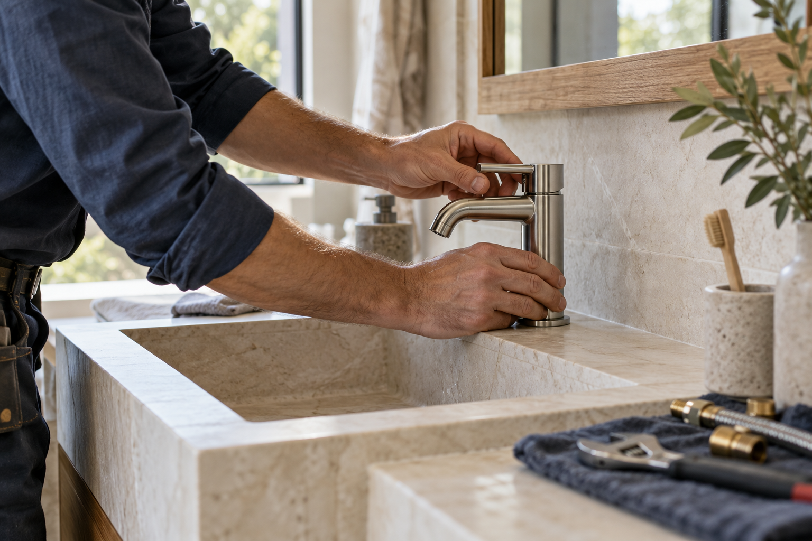

Plomberie & sanitaire · Marseille
Une plomberie qui vous simplifie la vie.
Dépannage plomberie, installation sanitaire et rénovation de salle de bain à Marseille, Allauch et Plan-de-Cuques.
Marseille · Allauch · Plan-de-Cuques

Les prestations
Nos interventions
Dépannage plomberie
Une fuite ou un équipement qui fonctionne mal ? Présentez-nous la situation pour préparer une intervention adaptée à votre installation.
Installation sanitaire
Robinetterie, lavabo ou douche : parlons de vos équipements et des raccordements nécessaires à votre projet.
Rénovation de salle de bain
Repensez l’organisation de votre salle de bain. Échangeons sur vos usages, l’espace disponible et les travaux de plomberie à prévoir.
Une question sur l’une de ces prestations ?
Prendre contactÀ propos
Votre interlocuteur
Atelier Nérée accompagne les particuliers dans leurs projets de plomberie et d’aménagement sanitaire à Marseille. Une fuite à comprendre, une installation à remplacer ou une salle de bain à repenser : nous prenons le temps de parler de votre besoin.
Cette entreprise et les prestations décrites constituent une fiche fictive conçue pour démontrer le moteur LocalExpand.
- Notre activité
- Plomberie et équipements sanitaires
- Pour qui ?
- Particuliers
À proximité
Zone d’intervention
- Marseille
- Allauch
- Plan-de-Cuques
Et maintenant ?
Parlons de votre installation
Une question ou un projet ? Contactez Atelier Nérée directement par téléphone ou par e-mail.